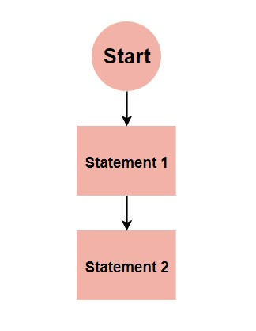
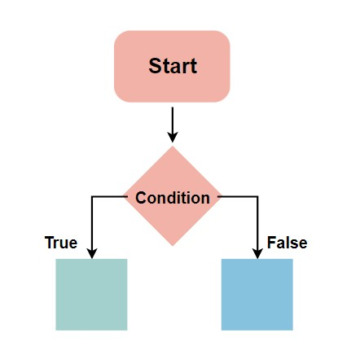
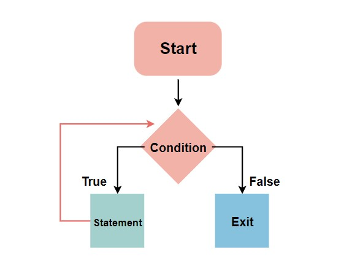

Fundamentals Of Programming
Irrespective of the programming language you choose to learn, the basic concepts of programming are similar across languages. Some of these concepts include:
- Variable Declaration
- Basic Syntax
- Data Type and Structures
- Flow Control Structures (Conditionals and loops)
- Functional Programming
- Object-Oriented Programming
- Debugging
- IDEs and Coding Environments
Variable declaration
Variables are containers for storing data values, a memory location for a data type. Variables are created using a declaration or keyword that varies across languages. Variable names are usually alphanumeric, that is, they contain a-z and 0-9. They can also include special characters like underscore or the dollar sign. Variables can hold values of any data type supported by the programming language. This value may change during program execution.
Basic syntax
Every programming language has its syntax, and you must learn the fundamental syntax of the language you are learning. Syntax refers to the set of rules that define the structure of a language. It is almost impossible to read or understand a programming language without its syntax. For example, let us declare a variable named greet and assign the value “Hello World” to it:
String greet = "Hello World";
Data types and structures.
Data types refer to the classification of data. The most common data types include:
- String
- Boolean (true or false)
- Numbers, which includes integers (whole numbers from 1) and floating-point numbers (decimal-base)
- Characters (includes single alphabets or numbers)
- Arrays (a collection of data, usually of the same data type)
Some common types of data structures include:
- Stacks
- Heaps
- Trees
- Linked lists
- Queues
- Arrays
- Tables
- Graphs
Flow control structures
Flow Control Structures are the fundamental components of computer programs. They are commands that allow a program to “decide” to take one direction or another. There are three basic types of control structures: sequential, selection, and iteration.
Sequential
The most basic control flow is sequential control flow. It involves the execution of code statements one after the other. A real-world example is following a cooking recipe.

Selection (conditionals)
The basic premise of selection flow control is, the computer decides what action to perform based on the result of a test or condition equalling true or false.
Iteration (Loops).
A loop is a programming structure that allows a statement or block of code to be run repeatedly until a specified condition is no longer true (will return Boolean, true or false). It is one of the most powerful and fundamental programming concepts.
Functional programming
Functions are containers that take in a set of inputs and return an output. It is not required for a function to return a value. Pure functions will always give the same result for the same set of inputs. Functional Programming is a straightforward method of building software that involves using pure functions. This method eliminates the occurrence of data mutation or side effects.
Object-oriented programming
**Object-Oriented Programming (OOP)**is a programming concept that revolves around ‘objects’ and ‘methods. There are four principles of OOP:
- Inheritance
- Polymorphism
- Abstraction
- Encapsulation
Debugging
Debugging is a crucial skill. It involves detecting and removing existing and potential errors, defects, or ‘loopholes’ in one’s code.
IDEs and Coding Environments
IDE stands for Integrated Development Environment – they are applications programmers use to write code and organize text groups. It increases a programmer’s efficiency and productivity, and has added features like code completion, code compilation, debugging, syntax highlighting, etc. /p Some common examples of IDE’s are:
- Visual Studio code
- IntelliJ IDEA
- NetBeans
- Eclipse
Always remember to write clean, readable codes.